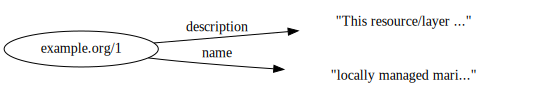

Maspawio¶
Dublin Core to Schema.org workflow testing¶
An experiment to see if we can convert a Dublin Core record to Schema.org. The focus will be on OIH type https://book.oceaninfohub.org/thematics/docs/README.html
The source location is: https://maspawio.net/layers/geonode:locally_managed_marine_areas_kenya
Need to generate somethnig like documented at: https://book.oceaninfohub.org/thematics/docs/maps.html We will need to add into this a sptial geometry to scope the bounding box.
refs¶
https://maspawio.net/layers/geonode:locally_managed_marine_areas_kenya
https://docs.google.com/spreadsheets/d/1OS_DPrPppxkWR7kU3vjRJaDSCq3XFn74/edit#gid=1139001206
import json
from pyld import jsonld
import os, sys, io
import xml.etree.ElementTree as ET
from urllib.request import urlopen
import ssl
import pandas as pd
import kglab
# Source Dubline core XML from net (https issue)
# Groups do need to start to move to https over http. However, when doing so, the issue of geting and installing the certificate
# can be an impediment. A popular group used by many is the Let's Encrypt group (https://letsencrypt.org/). Reference their
# documentation on CertBot (https://certbot.eff.org/)
# fails on SSL, cert needs updated but we can ignore it for now.
ctx = ssl.create_default_context()
ctx.check_hostname = False
ctx.verify_mode = ssl.CERT_NONE
dcxml = "https://maspawio.net/catalogue/csw?outputschema=http%3A%2F%2Fwww.opengis.net%2Fcat%2Fcsw%2F2.0.2&service=CSW&request=GetRecordById&version=2.0.2&elementsetname=full&id=3046b5fc-18e0-11eb-894f-0a735f7a740c"
with urlopen(dcxml, context=ctx) as f:
tree = ET.parse(f)
root = tree.getroot()
r = root.find('{http://www.opengis.net/cat/csw/2.0.2}Record')
# Bypassing the issue of the https cert, use a local file downloaded by bypassing the warning.
# tree = ET.parse('./data/dublin.xml')
# root = tree.getroot()
# print(root.tag)
# Just a loop to inspect all the elements, normall commented out and not needed in final script
# for element in r.findall('*'):
# print("{} :: {}".format(element.tag, element.text))
Type matching¶
In this case we see the type as “dataset” so we can match this to schema.org/Dataset. Other types would need special paths.
# id
id = r.find('{http://purl.org/dc/elements/1.1/}identifier')
print(id.text)
# name
# This can be used to form the URL: https://maspawio.net/layers/geonode%3Alocally_managed_marine_areas_kenya
name = r.find('{http://purl.org/dc/elements/1.1/}title')
print(name.text)
# description
description = r.find('{http://purl.org/dc/terms/}abstract')
print(description.text)
# keywords
subjects = r.findall('{http://purl.org/dc/elements/1.1/}subject')
for s in subjects:
print(s.text)
# spatial data
bb = r.find('{http://www.opengis.net/ows}BoundingBox')
uc = bb.find('{http://www.opengis.net/ows}UpperCorner')
lc = bb.find('{http://www.opengis.net/ows}LowerCorner')
ucs = uc.text.split(" ")
lcs = lc.text.split(" ")
x1 = float(ucs[0])
y1 = float(ucs[1])
x2 = float(lcs[0])
y2 = float(lcs[1])
# # 'POLYGON(x1 y1, x1 y2, x2 y2, x2 y1, x1 y1)'
poly = str("""POLYGON({} {} {} {} {} {} {} {} {} {})""".format(x1, y1, x1, y2, x2, y2, x2, y1, x1, y1))
print(poly)
# url https://maspawio.net/layers/geonode:locally_managed_marine_areas_kenya
3046b5fc-18e0-11eb-894f-0a735f7a740c
locally managed marine areas Kenya
This resource/layer shows the spatial location of locally managed marine areas (LMMA) along the Kenyan coast. The information comes from a report done by CORDIO in 2015 that sought to review a detailed history of LMMA development in Kenya. For more information, please contact jkawaka@cordioea.net
kenya
LMMA
POLYGON(-2.094547 41.116223 -2.094547 39.235491 -4.674234 39.235491 -4.674234 41.116223 -2.094547 41.116223)
data = {}
data['@id'] = str("https://maspawio.net/id/{}".format(id.text)) #id.text
data['@type'] = 'https://schema.org/Dataset'
data['https://schema.org/name'] = name.text
data['https://schema.org/description'] = description.text
aswkt = {}
aswkt['@type'] = "http://www.opengis.net/ont/geosparql#wktLiteral"
aswkt['@value'] = poly
crs = {}
crs['@id'] = "http://www.opengis.net/def/crs/OGC/1.3/CRS84"
hg = {}
hg['@type'] = "http://www.opengis.net/ont/sf#Polygon"
hg['http://www.opengis.net/ont/geosparql#asWKT'] = aswkt
hg['http://www.opengis.net/ont/geosparql#crs'] = crs
data['http://www.opengis.net/ont/geosparql#hasGeometry'] = hg
# keyword(s) loop
k = []
for s in subjects:
k.append(s.text)
data['https://schema.org/keywords'] = k
currentdir = os.path.dirname(os.path.abspath(''))
parentdir = os.path.dirname(currentdir)
sys.path.insert(0, currentdir)
from lib import jbutils
context = {"@vocab": "https://schema.org/", "geosparql": "http://www.opengis.net/ont/geosparql#"}
compacted = jsonld.compact(data, context)
jbutils.show_graph(compacted)

# jd = json.dumps(compacted, indent=4)
# print(jd)
with open('data/maspawio.json', 'w', encoding='utf-8') as f:
json.dump(compacted, f, ensure_ascii=False, indent=4)
import kglab
namespaces = {
"schema": "https://schema.org/",
"shacl": "http://www.w3.org/ns/shacl#" ,
}
kg = kglab.KnowledgeGraph(
name = "Schema.org based datagraph",
base_uri = "https://example.org/id/",
namespaces = namespaces,
)
# f = io.BytesIO(str.encode(jd))
kg.load_jsonld("./data/maspawio.json")
<kglab.kglab.KnowledgeGraph at 0x7fa860c69dc0>
# export the graph
kg.save_rdf("./data/maspawioSingle.ttl", format="ttl", base=None, encoding="utf-8")
links = pd.read_csv("./data/maspawio.csv", skiprows=7)
links.head()
| Resource name | Data type | Coverage | Designation | Link address | dclink | |
|---|---|---|---|---|---|---|
| 0 | locally managed marine areas Kenya | Point vector | National | Kenya | https://maspawio.net/layers/geonode%3Alocally_... | https://maspawio.net/catalogue/csw?outputschem... |
| 1 | Sea Level Rise vulnearbility | Raster data | Sub-national | Kenya-Mombasa drfils@gmail.com | https://maspawio.net/layers/geonode%3Akwale_ki... | https://maspawio.net/catalogue/csw?outputschem... |
| 2 | kwale Marine depth contours | Vector lines | Sub-national | Kenya-Kwale | https://maspawio.net/layers/geonode%3Akwale_ma... | https://maspawio.net/catalogue/csw?outputschem... |
| 3 | kwale bathymetry | Raster data | Sub-national | Kenya-Kwale | https://maspawio.net/layers/geonode%3Akwale_ba... | https://maspawio.net/catalogue/csw?outputschem... |
| 4 | Fishing intensity Kipini | Raster data | Sub-national | Kenya-Tana River | https://maspawio.net/layers/geonode%3Akipini_f... | https://maspawio.net/catalogue/csw?outputschem... |
linkcol = links["dclink"]
urls = linkcol.values
namespaces = {
"schema": "https://schema.org/",
"shacl": "http://www.w3.org/ns/shacl#" ,
}
kgset = kglab.KnowledgeGraph(
name = "Schema.org based datagraph",
base_uri = "https://example.org/id/",
namespaces = namespaces,
)
index = 0
for x in urls:
index = index +1
dcxml = x
with urlopen(dcxml, context=ctx) as f:
tree = ET.parse(f)
root = tree.getroot()
r = root.find('{http://www.opengis.net/cat/csw/2.0.2}Record')
# id
id = r.find('{http://purl.org/dc/elements/1.1/}identifier')
# name
# This can be used to form the URL: https://maspawio.net/layers/geonode%3Alocally_managed_marine_areas_kenya
name = r.find('{http://purl.org/dc/elements/1.1/}title')
# description
description = r.find('{http://purl.org/dc/terms/}abstract')
# keywords
subjects = r.findall('{http://purl.org/dc/elements/1.1/}subject')
# spatial data
bb = r.find('{http://www.opengis.net/ows}BoundingBox')
uc = bb.find('{http://www.opengis.net/ows}UpperCorner')
lc = bb.find('{http://www.opengis.net/ows}LowerCorner')
ucs = uc.text.split(" ")
lcs = lc.text.split(" ")
x1 = float(ucs[0])
y1 = float(ucs[1])
x2 = float(lcs[0])
y2 = float(lcs[1])
# # 'POLYGON(x1 y1, x1 y2, x2 y2, x2 y1, x1 y1)'
poly = str("""POLYGON({} {} {} {} {} {} {} {} {} {})""".format(x1, y1, x1, y2, x2, y2, x2, y1, x1, y1))
data = {}
# data['@id'] = str("https://maspawio.net/id/{}".format(id.text)) #id.text
data['@id'] = str("https://maspawio.net/id/{}".format(index)) #id.text
data['@type'] = 'https://schema.org/Dataset'
data['https://schema.org/name'] = name.text
data['https://schema.org/description'] = description.text
aswkt = {}
aswkt['@type'] = "http://www.opengis.net/ont/geosparql#wktLiteral"
aswkt['@value'] = poly
crs = {}
crs['@id'] = "http://www.opengis.net/def/crs/OGC/1.3/CRS84"
hg = {}
hg['@type'] = "http://www.opengis.net/ont/sf#Polygon"
hg['http://www.opengis.net/ont/geosparql#asWKT'] = aswkt
hg['http://www.opengis.net/ont/geosparql#crs'] = crs
data['http://www.opengis.net/ont/geosparql#hasGeometry'] = hg
# keyword(s) loop
k = []
for s in subjects:
k.append(s.text)
data['https://schema.org/keywords'] = k
context = {"@vocab": "https://schema.org/", "geosparql": "http://www.opengis.net/ont/geosparql#"}
compacted = jsonld.compact(data, context)
# need sha hash for the "compacted" var and then also generate the prov for this record.
filename = str("data/maspawio{}.json".format(index))
with open(filename, 'w', encoding='utf-8') as f:
json.dump(compacted, f, ensure_ascii=False, indent=4)
kgset.load_jsonld(filename)
print(index)
1
2
3
4
5
6
7
8
9
10
11
12
13
14
15
16
17
18
19
20
21
kgset.save_rdf("./data/maspawio.rdf", format="ttl", base=None, encoding="utf-8")